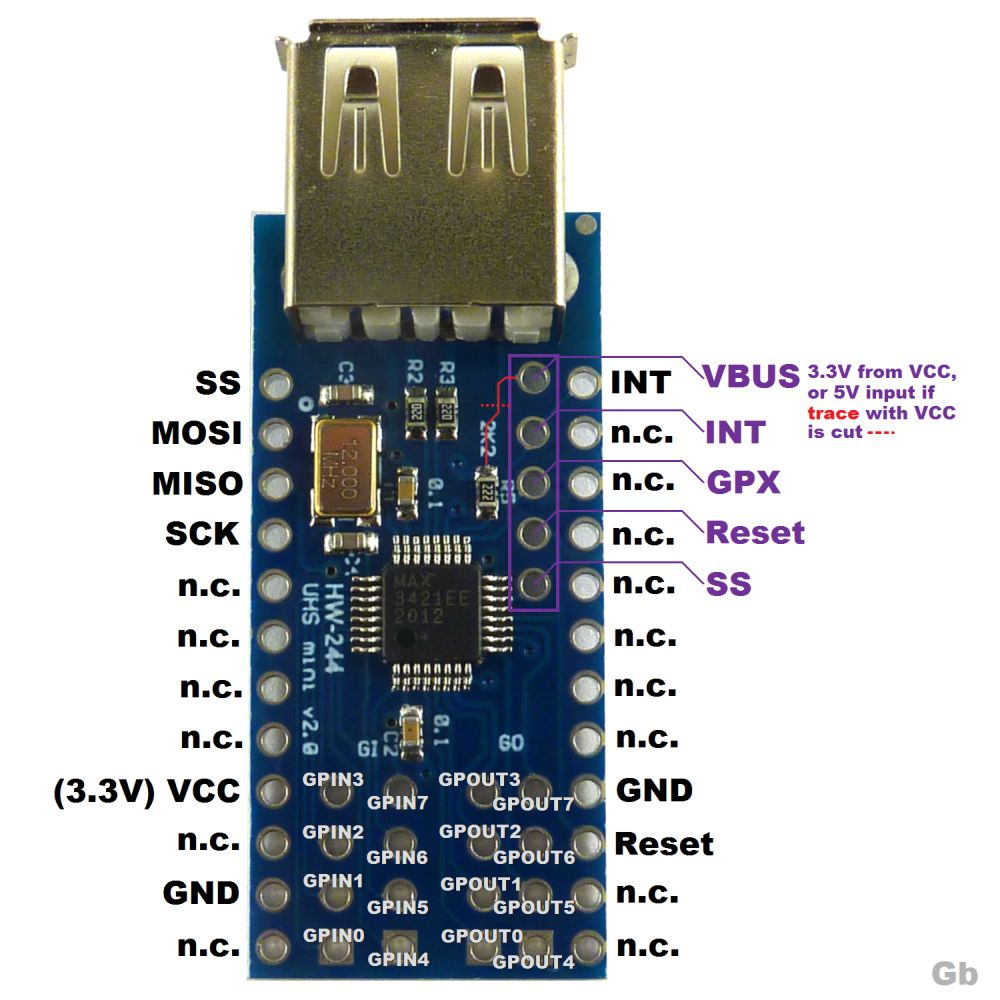
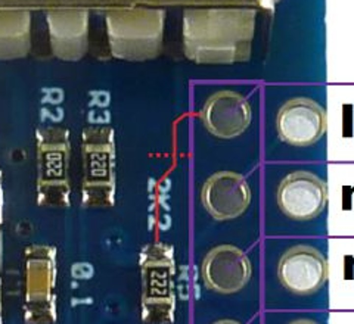

Maxim MAX3421E USB Host Controller
The MAX3421E is a USB 2.0 full-speed/low-speed host (or peripheral) controller with an SPI interface. It lets any MCU with an SPI port act as a USB host, which is useful on parts that have no USB host controller of their own (for example the STM32F103).
The NuttX driver lives in drivers/usbhost/usbhost_max3421e.c and
implements the standard USB host controller interfaces
(struct usbhost_driver_s and struct usbhost_connection_s), so all
the regular NuttX USB host class drivers (HID mouse, HID keyboard, mass
storage, CDC/ACM, …) can be used on top of it.
Note
The driver is still marked as experimental and depends on
CONFIG_EXPERIMENTAL.
Configuration
CONFIG_USBHOST_MAX3421EEnable the driver. It selects
CONFIG_SPIandCONFIG_SCHED_LPWORK(the interrupt handling is deferred to the low priority work queue because the chip is accessed over SPI).CONFIG_MAX3421E_DESCSIZEMaximum size of a descriptor. Default: 128.
CONFIG_MAX3421E_USBHOST_REGDEBUGDump every register access (very verbose, requires
CONFIG_DEBUG_USB_INFO).CONFIG_MAX3421E_USBHOST_PKTDUMPDump all incoming and outgoing USB packets (requires
CONFIG_DEBUG_USB_INFO).
Board Interface
The board logic provides a struct max3421e_lowerhalf_s (see
include/nuttx/usb/max3421e.h) and calls
max3421e_usbhost_initialize():
spi,frequency,mode,devidThe SPI bus instance, the SPI clock (up to 26 MHz), the SPI mode (
SPIDEV_MODE0orSPIDEV_MODE3) and the device ID used withSPIDEV_USBHOST(devid)for the chip select.intconfigHow the INT pin signals interrupts.
0selects a push-pull, falling-edge interrupt, which is the natural choice for MCUs whose external interrupts are edge triggered (like the STM32 EXTI).USBHOST_PINCTL_INTLEVELselects an open-drain, level active-low interrupt (a pull-up is then required).attach(),enable(),acknowledge(),power()Attach the driver interrupt handler to the INT GPIO, enable/disable it, acknowledge it, and switch VBUS on/off (if the board can).
The driver disables the GPIO interrupt while the interrupt work runs. With
an edge triggered GPIO an edge that happens in that window is lost while
INT stays asserted, so enable() should check the INT level and dispatch
the handler immediately if INT is already active.
After initialization the board must start a thread that waits for connection events and enumerates the devices:
for (; ; )
{
CONN_WAIT(conn, &hport);
if (hport->connected)
{
CONN_ENUMERATE(conn, hport);
}
}
Examples: boards/arm/stm32f1/stm32f103-minimum/src/stm32_max3421e.c
and boards/arm/stm32f1/viewtool-stm32f107/src/stm32_max3421e.c.
Low cost “USB Host Mini” module (HW-244)
A popular way to get a MAX3421E is the small blue “Mini USB Host Shield
2.0” module (silkscreen HW-244 / UHS mini v2.0). It carries the
MAX3421E, its 12 MHz crystal and a USB-A socket. All the useful signals are
on the two long edges; the pins marked n.c. and the GPIN/GPOUT
pads can be left unconnected.


HW-244 MAX3421E module pinout (picture from the Fritzing forum, https://forum.fritzing.org/t/max3421e-part-making/33489)
Pin |
Function |
|---|---|
SS |
SPI chip select (active low) |
MOSI |
SPI data in |
MISO |
SPI data out |
SCK |
SPI clock |
INT |
Interrupt output |
Reset |
MAX3421E |
GPX |
General purpose output (not needed by the driver) |
VCC |
3.3V supply of the MAX3421E |
GND |
Ground |
VBUS (pad) |
Pin 1 (power) of the USB-A socket |
Why the VBUS trace must be cut
The module has two different supplies:
VCC powers the MAX3421E and its crystal. The MAX3421E is a 3.3V part and the module has no voltage regulator, so VCC must be 3.3V. Never apply 5V to VCC.
VBUS powers the USB device that is plugged into the USB-A socket. The USB specification requires 5V here.
To save parts, the module ties VBUS to VCC with a PCB trace, so the USB device only gets 3.3V. Some simple devices tolerate that, but most of them (flash drives, many mice, keyboards and hubs) do not start, so the MAX3421E never sees them connect.
The trace runs from the VBUS pad (the top pad of the column of five pads
near the USB socket) to the 2K2 resistor (R5). Cut it at the place
marked with the red dotted line:


The VBUS-to-VCC trace (red) and where to cut it (dotted line)
Procedure:
With a multimeter in continuity mode, check that VBUS and VCC are connected (it beeps).
Cut the trace with a sharp hobby knife until the fiberglass is visible. Keep away from the neighbouring pads and from R5.
Check again: VBUS and VCC must not be connected anymore, and VCC must not be shorted to GND.
Wire the VBUS pad to a 5V supply (for example the 5V pin of the MCU board when it is powered from USB).
Warning
Do not connect 5V to the VBUS pad before confirming that the trace is open: it would put 5V on the 3.3V rail and can damage the MAX3421E and the MCU.
Notes
Keep the SPI, INT, Reset and GND wires short. With long jumper wires a glitch on Reset or a corrupted SPI write (for example one that sets
CHIPRESinUSBCTL) silently resets the chip: the registers return to their defaults while SPI keeps working.Prefer driving
RES#from a GPIO and pulsing it at boot, so the chip always starts from a known state.